Fault detection and self-recovery on an STM32F103C8 (Wokwi): results
Generated by Tests/tools/make_report.py from the raw logs. Read docs/SIMULATOR_LIMITATIONS.md before quoting numbers.
- baseline campaign (Step 4):
results/raw/step4/20261008_135006 - detection campaign (Step 5):
results/raw/step5/20261008_132103 - recovery campaign (Step 6):
results/raw/step6/20261008_144835
Acceptance criteria per step
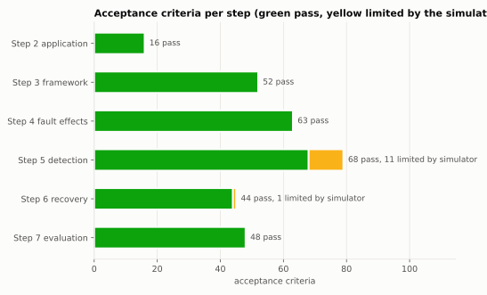
Baseline vs protected outcome per fault
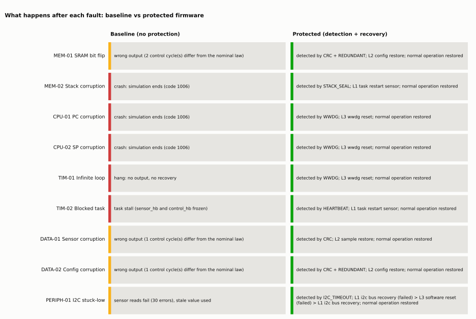
Detection coverage
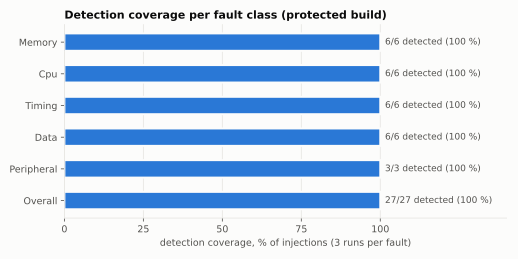
Detection latency
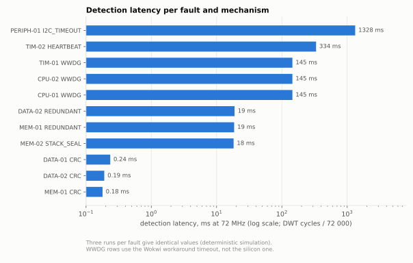
Recovery time
Recovery success rate
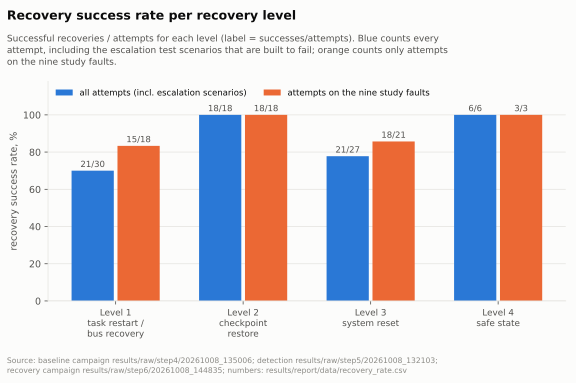
Resource overhead
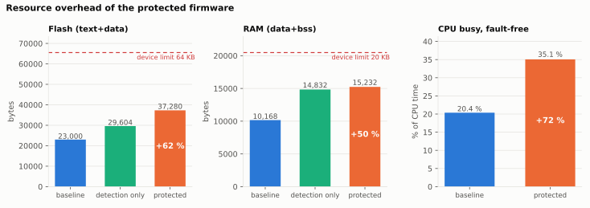
Control output around the injection
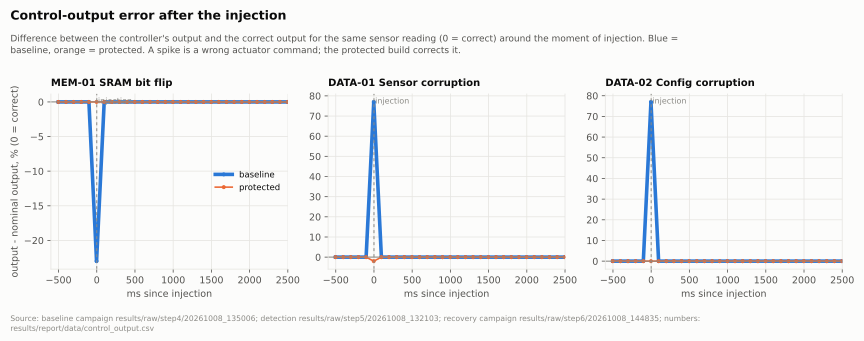
Application progress after the injection
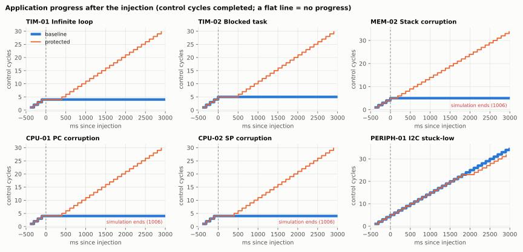
Recovery attempts and escalation
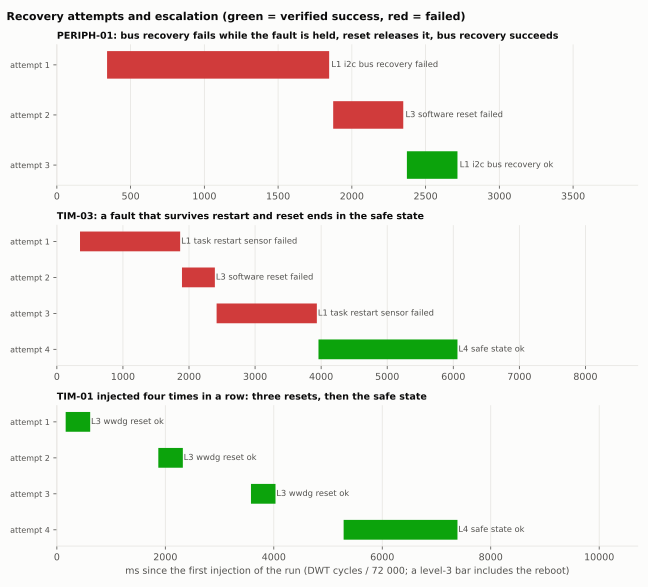
Tables as images
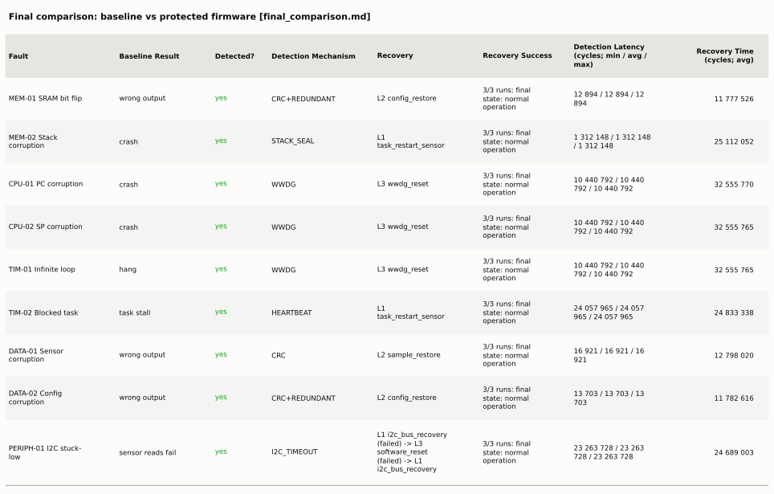
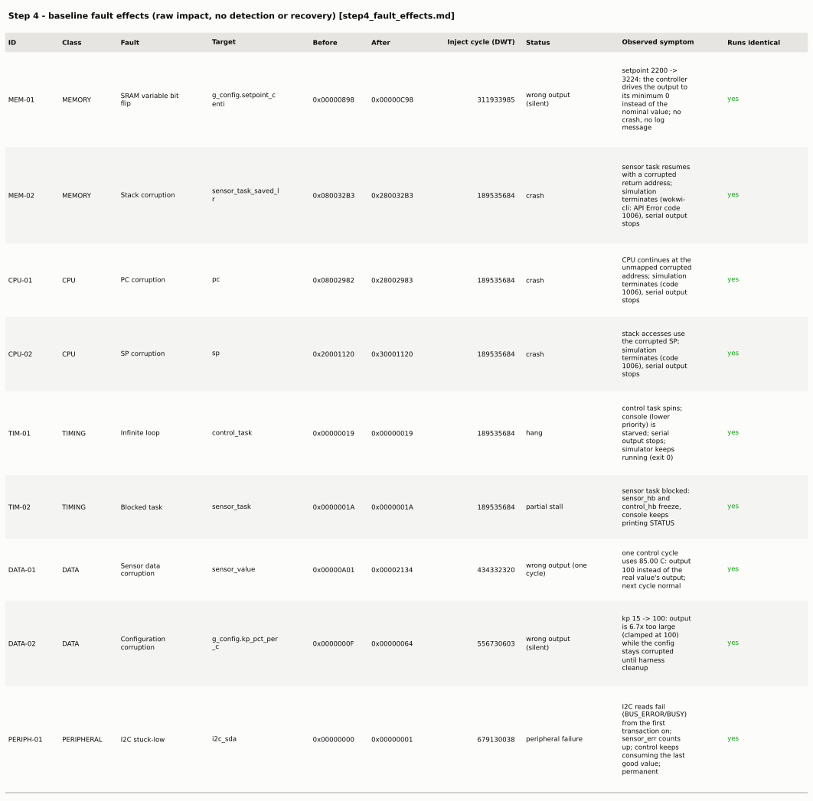
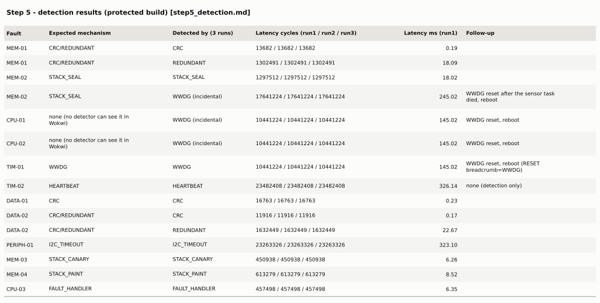
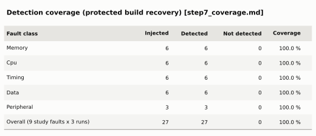
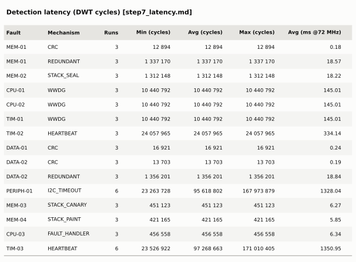
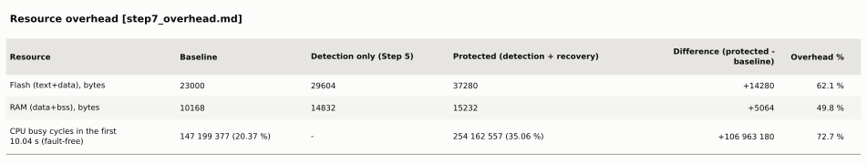
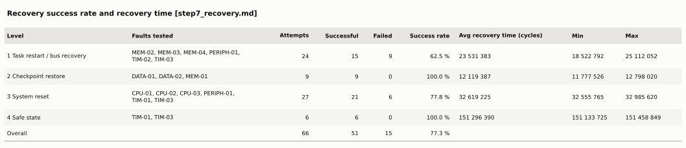
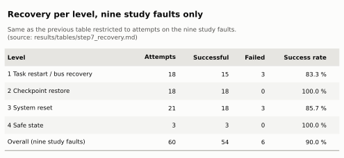
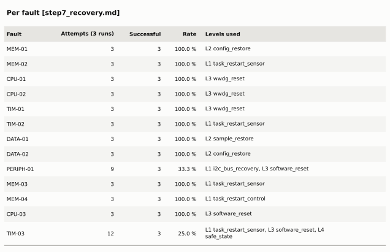
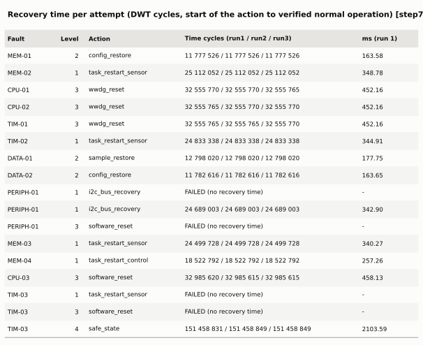
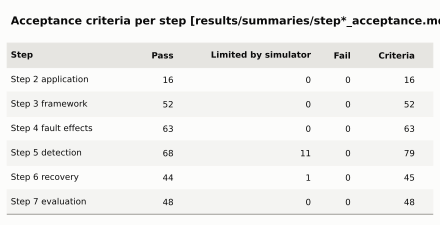
Table: Final comparison
Final comparison: baseline vs protected firmware
Baseline = build `baseline` (no protection), raw logs `results/raw/step4/20261008_135006`. Protected = build `recovery` (detection + recovery), raw logs `results/raw/step6/20261008_144835`. 3 runs per fault and build; results of the 3 runs are identical (deterministic simulation). Latency and time in DWT cycles (72 MHz, 72 000 cycles = 1 ms).
| Fault | Baseline Result | Detected? | Detection Mechanism | Recovery | Recovery Success | Detection Latency (cycles; min / avg / max) | Recovery Time (cycles; avg) |
|---|---|---|---|---|---|---|---|
| MEM-01 SRAM bit flip | wrong output | yes | CRC+REDUNDANT | L2 config_restore | 3/3 runs: final state: normal operation | 12 894 / 12 894 / 12 894 | 11 777 526 |
| MEM-02 Stack corruption | crash | yes | STACK_SEAL | L1 task_restart_sensor | 3/3 runs: final state: normal operation | 1 312 148 / 1 312 148 / 1 312 148 | 25 112 052 |
| CPU-01 PC corruption | crash | yes | WWDG | L3 wwdg_reset | 3/3 runs: final state: normal operation | 10 440 792 / 10 440 792 / 10 440 792 | 32 555 770 |
| CPU-02 SP corruption | crash | yes | WWDG | L3 wwdg_reset | 3/3 runs: final state: normal operation | 10 440 792 / 10 440 792 / 10 440 792 | 32 555 765 |
| TIM-01 Infinite loop | hang | yes | WWDG | L3 wwdg_reset | 3/3 runs: final state: normal operation | 10 440 792 / 10 440 792 / 10 440 792 | 32 555 765 |
| TIM-02 Blocked task | task stall | yes | HEARTBEAT | L1 task_restart_sensor | 3/3 runs: final state: normal operation | 24 057 965 / 24 057 965 / 24 057 965 | 24 833 338 |
| DATA-01 Sensor corruption | wrong output | yes | CRC | L2 sample_restore | 3/3 runs: final state: normal operation | 16 921 / 16 921 / 16 921 | 12 798 020 |
| DATA-02 Config corruption | wrong output | yes | CRC+REDUNDANT | L2 config_restore | 3/3 runs: final state: normal operation | 13 703 / 13 703 / 13 703 | 11 782 616 |
| PERIPH-01 I2C stuck-low | sensor reads fail | yes | I2C_TIMEOUT | L1 i2c_bus_recovery (failed) -> L3 software_reset (failed) -> L1 i2c_bus_recovery | 3/3 runs: final state: normal operation | 23 263 728 / 23 263 728 / 23 263 728 | 24 689 003 |
Notes: PERIPH-01 needs two recovery levels (bus recovery fails while the fault is held, a reset releases the trigger, bus recovery then succeeds), so its recovery time is for the last, successful attempt. CPU-01/CPU-02/TIM-01 are detected as hangs by the WWDG shim (simulator workaround) and recovered by the WWDG reset; their time includes the reboot. In the baseline CPU-01, CPU-02 and MEM-02 end the Wokwi simulation itself (code 1006), so no further behaviour of the baseline can be observed after them.
Table: Detection coverage
Detection coverage (protected build `recovery`)
Coverage = detected injections / injected faults x 100. One injection = one fault in one run. Detected = a DETECT line carrying the EXP of the injected experiment.
| Fault class | Injected | Detected | Not detected | Coverage |
|---|---|---|---|---|
| Memory | 6 | 6 | 0 | 100.0 % |
| Cpu | 6 | 6 | 0 | 100.0 % |
| Timing | 6 | 6 | 0 | 100.0 % |
| Data | 6 | 6 | 0 | 100.0 % |
| Peripheral | 3 | 3 | 0 | 100.0 % |
| **Overall (9 study faults x 3 runs)** | 27 | 27 | 0 | **100.0 %** |
Detector-validation faults (MEM-03, MEM-04, CPU-03, TIM-03; not part of the nine): 12/12 detected (100.0 %) - reported separately, not mixed into the table above.
CPU-01 and CPU-02 count as detected because the WWDG detects the resulting hang; no fault-exception detector can act in Wokwi (docs/SIMULATOR_LIMITATIONS.md section 13). Coverage of 100 % holds only for these nine faults at these injection points, not for faults in general.
Per fault (3 runs): MEM-01: 3/3; MEM-02: 3/3; CPU-01: 3/3; CPU-02: 3/3; TIM-01: 3/3; TIM-02: 3/3; DATA-01: 3/3; DATA-02: 3/3; PERIPH-01: 3/3
Table: Detection latency
Detection latency (DWT cycles)
Latency = detection cycle - injection cycle (DWT CYCCNT, 72 MHz; 1 ms = 72 000 cycles). Every individual measurement is kept in `results/summaries/step7_latencies.csv`; min/avg/max below are computed from them. Within one run a fault can be detected by several mechanisms; each is listed.
| Fault | Mechanism | Runs | Min (cycles) | Avg (cycles) | Max (cycles) | Avg (ms @72 MHz) |
|---|---|---|---|---|---|---|
| MEM-01 | CRC | 3 | 12 894 | 12 894 | 12 894 | 0.18 |
| MEM-01 | REDUNDANT | 3 | 1 337 170 | 1 337 170 | 1 337 170 | 18.57 |
| MEM-02 | STACK_SEAL | 3 | 1 312 148 | 1 312 148 | 1 312 148 | 18.22 |
| CPU-01 | WWDG | 3 | 10 440 792 | 10 440 792 | 10 440 792 | 145.01 |
| CPU-02 | WWDG | 3 | 10 440 792 | 10 440 792 | 10 440 792 | 145.01 |
| TIM-01 | WWDG | 3 | 10 440 792 | 10 440 792 | 10 440 792 | 145.01 |
| TIM-02 | HEARTBEAT | 3 | 24 057 965 | 24 057 965 | 24 057 965 | 334.14 |
| DATA-01 | CRC | 3 | 16 921 | 16 921 | 16 921 | 0.24 |
| DATA-02 | CRC | 3 | 13 703 | 13 703 | 13 703 | 0.19 |
| DATA-02 | REDUNDANT | 3 | 1 356 201 | 1 356 201 | 1 356 201 | 18.84 |
| PERIPH-01 | I2C_TIMEOUT | 6 | 23 263 728 | 95 618 802 | 167 973 879 | 1328.04 |
| MEM-03 | STACK_CANARY | 3 | 451 123 | 451 123 | 451 123 | 6.27 |
| MEM-04 | STACK_PAINT | 3 | 421 165 | 421 165 | 421 165 | 5.85 |
| CPU-03 | FAULT_HANDLER | 3 | 456 558 | 456 558 | 456 558 | 6.34 |
| TIM-03 | HEARTBEAT | 6 | 23 526 922 | 97 268 663 | 171 010 405 | 1350.95 |
WWDG rows measure the simulator-workaround timeout (150 ms without monitor progress + 8 ms), not the silicon WWDG timeout. The simulation is deterministic: the 3 runs of a fault give identical values.
Table: Recovery success and time
Recovery success rate and recovery time
Success rate = successful recoveries / recovery attempts x 100. An attempt is successful only if its verification of normal operation passed (COMPLETE success=1). Attempts are counted from every RECOVERY START line of the 27 recovery-campaign runs (including the escalation scenarios); escalations count as attempts of their own level.
| Level | Faults tested | Attempts | Successful | Failed | Success rate | Avg recovery time (cycles) | Min | Max |
|---|---|---|---|---|---|---|---|---|
| 1 Task restart / bus recovery | MEM-02, MEM-03, MEM-04, PERIPH-01, TIM-02, TIM-03 | 24 | 15 | 9 | 62.5 % | 23 531 383 | 18 522 792 | 25 112 052 |
| 2 Checkpoint restore | DATA-01, DATA-02, MEM-01 | 9 | 9 | 0 | 100.0 % | 12 119 387 | 11 777 526 | 12 798 020 |
| 3 System reset | CPU-01, CPU-02, CPU-03, PERIPH-01, TIM-01, TIM-03 | 27 | 21 | 6 | 77.8 % | 32 619 225 | 32 555 765 | 32 985 620 |
| 4 Safe state | TIM-01, TIM-03 | 6 | 6 | 0 | 100.0 % | 151 296 390 | 151 133 725 | 151 458 849 |
| **Overall** | 66 | 51 | 15 | **77.3 %** |
## Attempts on the nine study faults (includes the repeated-TIM-01 scenario that ends in the safe state; excludes the validation faults MEM-03, MEM-04, CPU-03, TIM-03)
| Level | Attempts | Successful | Failed | Success rate |
|---|---|---|---|---|
| 1 Task restart / bus recovery | 12 | 9 | 3 | 75.0 % |
| 2 Checkpoint restore | 9 | 9 | 0 | 100.0 % |
| 3 System reset | 21 | 18 | 3 | 85.7 % |
| 4 Safe state | 3 | 3 | 0 | 100.0 % |
| **Overall (nine study faults)** | 45 | 39 | 6 | **86.7 %** |
## Per fault
| Fault | Attempts (3 runs) | Successful | Rate | Levels used |
|---|---|---|---|---|
| MEM-01 | 3 | 3 | 100.0 % | L2 config_restore |
| MEM-02 | 3 | 3 | 100.0 % | L1 task_restart_sensor |
| CPU-01 | 3 | 3 | 100.0 % | L3 wwdg_reset |
| CPU-02 | 3 | 3 | 100.0 % | L3 wwdg_reset |
| TIM-01 | 3 | 3 | 100.0 % | L3 wwdg_reset |
| TIM-02 | 3 | 3 | 100.0 % | L1 task_restart_sensor |
| DATA-01 | 3 | 3 | 100.0 % | L2 sample_restore |
| DATA-02 | 3 | 3 | 100.0 % | L2 config_restore |
| PERIPH-01 | 9 | 3 | 33.3 % | L1 i2c_bus_recovery, L3 software_reset |
| MEM-03 | 3 | 3 | 100.0 % | L1 task_restart_sensor |
| MEM-04 | 3 | 3 | 100.0 % | L1 task_restart_control |
| CPU-03 | 3 | 3 | 100.0 % | L3 software_reset |
| TIM-03 | 12 | 3 | 25.0 % | L1 task_restart_sensor, L3 software_reset, L4 safe_state |
## Recovery time per attempt (DWT cycles, start of the action to verified normal operation)
| Fault | Level | Action | Time cycles (run1 / run2 / run3) | ms (run 1) |
|---|---|---|---|---|
| MEM-01 | 2 | config_restore | 11 777 526 / 11 777 526 / 11 777 526 | 163.58 |
| MEM-02 | 1 | task_restart_sensor | 25 112 052 / 25 112 052 / 25 112 052 | 348.78 |
| CPU-01 | 3 | wwdg_reset | 32 555 770 / 32 555 770 / 32 555 765 | 452.16 |
| CPU-02 | 3 | wwdg_reset | 32 555 765 / 32 555 770 / 32 555 770 | 452.16 |
| TIM-01 | 3 | wwdg_reset | 32 555 765 / 32 555 765 / 32 555 770 | 452.16 |
| TIM-02 | 1 | task_restart_sensor | 24 833 338 / 24 833 338 / 24 833 338 | 344.91 |
| DATA-01 | 2 | sample_restore | 12 798 020 / 12 798 020 / 12 798 020 | 177.75 |
| DATA-02 | 2 | config_restore | 11 782 616 / 11 782 616 / 11 782 616 | 163.65 |
| PERIPH-01 | 1 | i2c_bus_recovery | FAILED (no recovery time) | - |
| PERIPH-01 | 1 | i2c_bus_recovery | 24 689 003 / 24 689 003 / 24 689 003 | 342.90 |
| PERIPH-01 | 3 | software_reset | FAILED (no recovery time) | - |
| MEM-03 | 1 | task_restart_sensor | 24 499 728 / 24 499 728 / 24 499 728 | 340.27 |
| MEM-04 | 1 | task_restart_control | 18 522 792 / 18 522 792 / 18 522 792 | 257.26 |
| CPU-03 | 3 | software_reset | 32 985 620 / 32 985 615 / 32 985 615 | 458.13 |
| TIM-03 | 1 | task_restart_sensor | FAILED (no recovery time) | - |
| TIM-03 | 3 | software_reset | FAILED (no recovery time) | - |
| TIM-03 | 4 | safe_state | 151 458 831 / 151 458 849 / 151 458 849 | 2103.59 |
Level 3 times include the reboot and the verification after it (they are valid in Wokwi, where DWT CYCCNT keeps counting through a reset; on silicon CYCCNT restarts and the persisted start cycle could not be used). Failed attempts show no time on purpose. The WWDG reset path uses the simulator workaround of Step 5.
Table: Resource overhead
Resource overhead
Flash and RAM from `arm-none-eabi-size -B` of the ELF actually simulated in each campaign. RAM includes the FreeRTOS heap array (8 KB baseline, 12 KB protected: larger task stacks, one more task) but not the 2 KB main stack reserved by the linker.
| Resource | Baseline | Detection only (Step 5) | Protected (detection + recovery) | Difference (protected - baseline) | Overhead % |
|---|---|---|---|---|---|
| Flash (text+data), bytes | 23000 | 29604 | 37280 | +14280 | 62.1 % |
| RAM (data+bss), bytes | 10168 | 14832 | 15232 | +5064 | 49.8 % |
| CPU busy cycles in the first 10.04 s (fault-free) | 147 199 377 (20.37 %) | - | 254 162 557 (35.06 %) | +106 963 180 | 72.7 % |
CPU measurement: `make BUILD=<baseline|recovery> CPU_STATS=1` adds the same idle-cycle counters to both images (traceTASK_SWITCHED_IN/OUT hooks, [CPUSTAT] line once per second). busy = total elapsed DWT cycles - cycles in the idle task, i.e. application tasks + ISRs + scheduler + detection/recovery; the 10th one-second sample of 3 fault-free runs per image is used. Individual samples (total, idle, busy cycles): baseline [(722699599, 575500222, 147199377, 203), (722699599, 575500222, 147199377, 203), (722699599, 575500222, 147199377, 203)], recovery [(724932494, 470769937, 254162557, 350), (724932494, 470769937, 254162557, 350), (724932494, 470769937, 254162557, 350)].
Table: Baseline fault effects (Step 4)
Step 4 - baseline fault effects (raw impact, no detection or recovery)
Source: raw logs in `results/raw/step4/20261008_103908/`; generated by `Tests/tools/check_step4.py`. UART-triggered injections, 3 runs each.
| ID | Class | Fault | Target | Before | After | Inject cycle (DWT) | Status | Observed symptom | Runs identical |
|---|---|---|---|---|---|---|---|---|---|
| MEM-01 | MEMORY | SRAM variable bit flip | `g_config.setpoint_centi` | 0x00000898 | 0x00000C98 | 311933985 | wrong output (silent) | setpoint 2200 -> 3224: the controller drives the output to its minimum 0 instead of the nominal value; no crash, no log message | yes |
| MEM-02 | MEMORY | Stack corruption | `sensor_task_saved_lr` | 0x080032B3 | 0x280032B3 | 189535684 | crash | sensor task resumes with a corrupted return address; simulation terminates (wokwi-cli: API Error code 1006), serial output stops | yes |
| CPU-01 | CPU | PC corruption | `pc` | 0x08002982 | 0x28002983 | 189535684 | crash | CPU continues at the unmapped corrupted address; simulation terminates (code 1006), serial output stops | yes |
| CPU-02 | CPU | SP corruption | `sp` | 0x20001120 | 0x30001120 | 189535684 | crash | stack accesses use the corrupted SP; simulation terminates (code 1006), serial output stops | yes |
| TIM-01 | TIMING | Infinite loop | `control_task` | 0x00000019 | 0x00000019 | 189535684 | hang | control task spins; console (lower priority) is starved; serial output stops; simulator keeps running (exit 0) | yes |
| TIM-02 | TIMING | Blocked task | `sensor_task` | 0x0000001A | 0x0000001A | 189535684 | partial stall | sensor task blocked: sensor_hb and control_hb freeze, console keeps printing STATUS | yes |
| DATA-01 | DATA | Sensor data corruption | `sensor_value` | 0x00000A01 | 0x00002134 | 434332320 | wrong output (one cycle) | one control cycle uses 85.00 C: output 100 instead of the real value's output; next cycle normal | yes |
| DATA-02 | DATA | Configuration corruption | `g_config.kp_pct_per_c` | 0x0000000F | 0x00000064 | 556730603 | wrong output (silent) | kp 15 -> 100: output is 6.7x too large (clamped at 100) while the config stays corrupted until harness cleanup | yes |
| PERIPH-01 | PERIPHERAL | I2C stuck-low | `i2c_sda` | 0x00000000 | 0x00000001 | 679130038 | peripheral failure | I2C reads fail (BUS_ERROR/BUSY) from the first transaction on; sensor_err counts up; control keeps consuming the last good value; permanent | yes |
Limits: see `docs/SIMULATOR_LIMITATIONS.md` section 11. The crash faults end the Wokwi simulation itself, so fault registers (CFSR/HFSR) and the CPU state after the fault are not observable in the baseline.
Table: Detection per fault (Step 5)
Step 5 - detection results (protected build)
Latency = detection cycle - injection cycle, DWT cycles at 72 MHz (1 ms = 72000 cycles). Source: `results/raw/step5/20261008_132103`.
| Fault | Expected mechanism | Detected by (3 runs) | Latency cycles (run1 / run2 / run3) | Latency ms (run1) | Follow-up |
|---|---|---|---|---|---|
| MEM-01 | CRC/REDUNDANT | CRC | 13682 / 13682 / 13682 | 0.19 | |
| MEM-01 | CRC/REDUNDANT | REDUNDANT | 1302491 / 1302491 / 1302491 | 18.09 | |
| MEM-02 | STACK_SEAL | STACK_SEAL | 1297512 / 1297512 / 1297512 | 18.02 | |
| MEM-02 | STACK_SEAL | WWDG (incidental) | 17641224 / 17641224 / 17641224 | 245.02 | WWDG reset after the sensor task died, reboot |
| CPU-01 | none (no detector can see it in Wokwi) | WWDG (incidental) | 10441224 / 10441224 / 10441224 | 145.02 | WWDG reset, reboot |
| CPU-02 | none (no detector can see it in Wokwi) | WWDG (incidental) | 10441224 / 10441224 / 10441224 | 145.02 | WWDG reset, reboot |
| TIM-01 | WWDG | WWDG | 10441224 / 10441224 / 10441224 | 145.02 | WWDG reset, reboot (RESET breadcrumb=WWDG) |
| TIM-02 | HEARTBEAT | HEARTBEAT | 23482408 / 23482408 / 23482408 | 326.14 | none (detection only) |
| DATA-01 | CRC | CRC | 16763 / 16763 / 16763 | 0.23 | |
| DATA-02 | CRC/REDUNDANT | CRC | 11916 / 11916 / 11916 | 0.17 | |
| DATA-02 | CRC/REDUNDANT | REDUNDANT | 1632449 / 1632449 / 1632449 | 22.67 | |
| PERIPH-01 | I2C_TIMEOUT | I2C_TIMEOUT | 23263326 / 23263326 / 23263326 | 323.10 | |
| MEM-03 | STACK_CANARY | STACK_CANARY | 450938 / 450938 / 450938 | 6.26 | |
| MEM-04 | STACK_PAINT | STACK_PAINT | 613279 / 613279 / 613279 | 8.52 | |
| CPU-03 | FAULT_HANDLER | FAULT_HANDLER | 457498 / 457498 / 457498 | 6.35 |
WWDG latencies measure the simulator-workaround timeout (150 ms without monitor progress + 8 ms), not the silicon WWDG timeout (58 ms). MEM-03, MEM-04 and CPU-03 are detector-validation faults added in Step 5, not study faults; CPU-03 runs the fault-handler path with a synthetic frame.